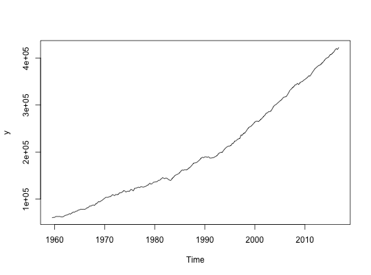
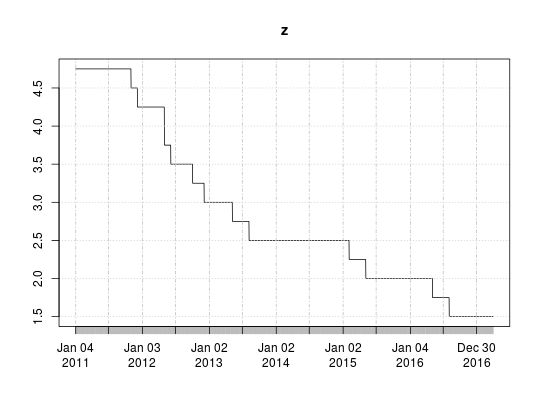

get_ausmacrodata returns a time series data set from ausmacrodata.org.
get_ausmacrodata(dataset, format, ...)
| dataset | a URL for a specific data set on ausmacrodata.org, or an id for a data set. |
|---|---|
| format | The desired format for the object to be returned. Possible
values are |
| ... | Other arguments, not currently used. |
# Read quarterly Australia GDP using full URL y <- get_ausmacrodata("http://ausmacrodata.org/series.php?id=gdpcknaasaq")#> #> #> #> #> #> #>#> Warning: 1 parsing failure. #> row col expected actual #> 3 -- 4 columns 5 columnsplot(y)# Read daily cash rate target interest rate using only series ID z <- get_ausmacrodata('crtdoirymmdir')#> #> #> #> #> #> #>library(xts)#>#> #>#> #> #>plot(z)